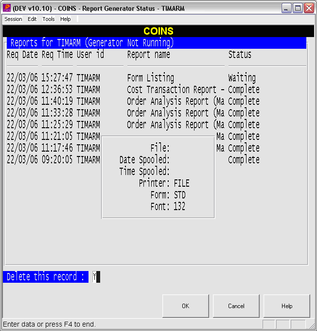
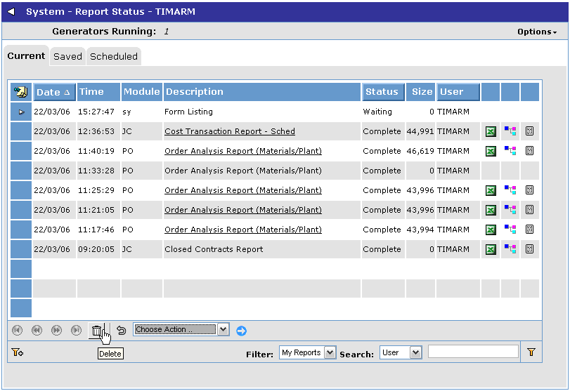
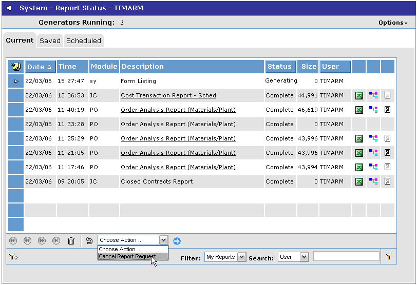

This document will be of interest to
If you have any other questions about the information contained in this document, or require further help with stopping background reports, please contact the
The following sections describe how to stop a background report from executing. They should be followed in order (as appropriate) as the severity of the action increases.
If a report is placed in the background queue but has so far not started to generate then it can simply be deleted.
In the

Select the report to cancel. As long as it has not started then it will offer the 'Delete this record' option. Select Y and the report will be deleted from the queue and will not generate.
In the OA Browser interface, go to the Report Status screen and select the report that you wish to cancel. As long as the report has not yet started generating (showing Waiting status) then by clicking the delete button the report will be cancelled.

If the report has started to generate then the delete options above will be prevented. For OA style reports where the output is a PDF file, you can abort these part-way through generation. At the next line in the report the generation will complete and the report so far will be produced in PDF with a message to show that the generation was aborted.
Go to the Report Status screen and select the report to be aborted (showing Generating status). Select the Cancel Report Request option in the browse action and click the apply action button. The status of the report will change to Aborting and at the next suitable point within the report production it will stop and the status will change to Aborted.

If the report is stuck at a lower level of generation then the status will remain at Aborting and you will need to try the next solution.
If you have tried the previous two solutions and the report still continues to generate then it will be necessary to disconnect the report generator to stop the report.
You first need to identify the report generator agent that is responsible for processing the report. From May 2006 patches this will be shown in the report log file. Prior to this patch you need to find the agent as shown below (the example is shown using HP-UX ? your unix commands may be different)
At the unix prompt type
ps -efx|grep pm99
This will return one or more processes that contain the string 'pm99'.
For example:
root 22602 1 255 10:53:26 ? 164:21 /usr/opt/dlc/v91e/bin/_progres -b -pf /opt/v10prod/dev/bin/coins.pf -b -p pm99b.p
The process ID of this background report generator is 22602. If there is more than one then you will need to make a judgement about which one is generating the problem report. You could turn off the background report generator which will allow the generators that are functioning properly to close; or you may be able to make assumptions about the CPU usage (shown here as 164:21) as to which process is the one required.
Having identified the report generator process ID you can the proceed to disconnect this process from the database which will cause it to stop generating the report.
Log in to COINSAdmin and go to Interactive Stop DB in the Brokers menu for the environment concerned. Select the coins database from the list of databases.
You will be shown a list of users and agents connected to the database.
For example:
usr pid time of login user id tty Limbo?
5 3050 Wed Mar 22 13:09:23 2006 batch no
6 22602 Sat Mar 18 23:12:32 2006 batch no
7 20534 Wed Mar 22 16:20:10 2006 /dev/pts/tz no
8 12659 Wed Mar 22 16:29:58 2006 /dev/pts/tP no
9 26908 Wed Mar 22 15:08:59 2006 /dev/pts/tn no
10 6521 Wed Mar 22 15:36:35 2006 /dev/pts/tnb no
11 25870 Wed Mar 22 16:29:59 2006 /dev/pts/tJ no
12 3051 Wed Mar 22 13:09:23 2006 batch no
13 12973 Wed Mar 22 15:30:46 2006 /dev/pts/tT no
14 24807 Wed Mar 22 16:24:37 2006 /dev/pts/tg no
16 18726 Wed Mar 22 08:20:28 2006 THAMAN /dev/pts/tw no
17 17264 Wed Mar 22 08:05:43 2006 ELIFEN /dev/pts/tq no
18 17322 Wed Mar 22 15:02:56 2006 /dev/pts/tr no
19 17396 Wed Mar 22 08:06:38 2006 /dev/pts/tu no
RETURN - show remaining, Q - quit:
If there is more than one page of users then press Return until you get the final page as shown below. You should look at the column headed ?pid? and find the report agent process ID that you have identified above. Note the user number from the column headed 'usr' that is alongside this process ID (in this example user number 6).
usr pid time of login user id tty Limbo?
38 12929 Wed Mar 22 09:20:57 2006 IANMIL /dev/pts/tS no
42 15027 Wed Mar 22 09:33:31 2006 /dev/pts/tY no
46 20194 Wed Mar 22 10:13:10 2006 JOSGAR /dev/pts/thb no
92 5588 Wed Mar 22 09:06:43 2006 khabut EDDIE no
93 4676 Tue Mar 21 11:13:11 2006 sysadmin EDDIE no
1 Disconnect a User
2 Unconditional Shutdown
3 Emergency Shutdown (Kill All)
x Exit
Enter choice>
You can now select option 1 to disconnect a user and then type in the user number. This will disconnect the report agent from the database and the report generation should be terminated. The report output may or may not be generated (it is most likely that it will not) depending on the type of report and where it has got to in the generation process.
If you have tried all the above suggestions and the report continues to run then you should contact the communication